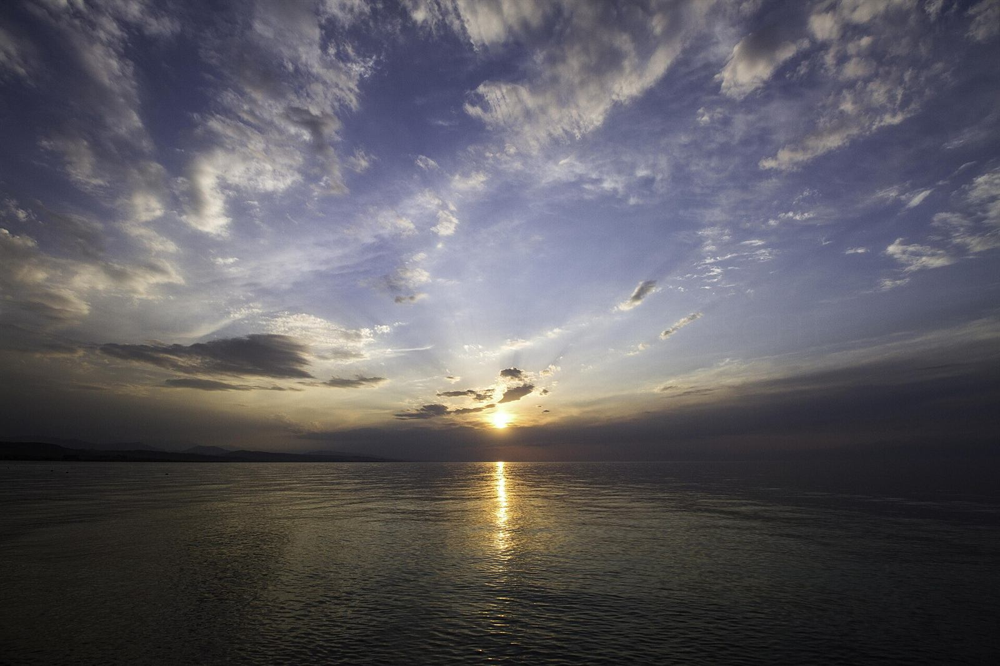
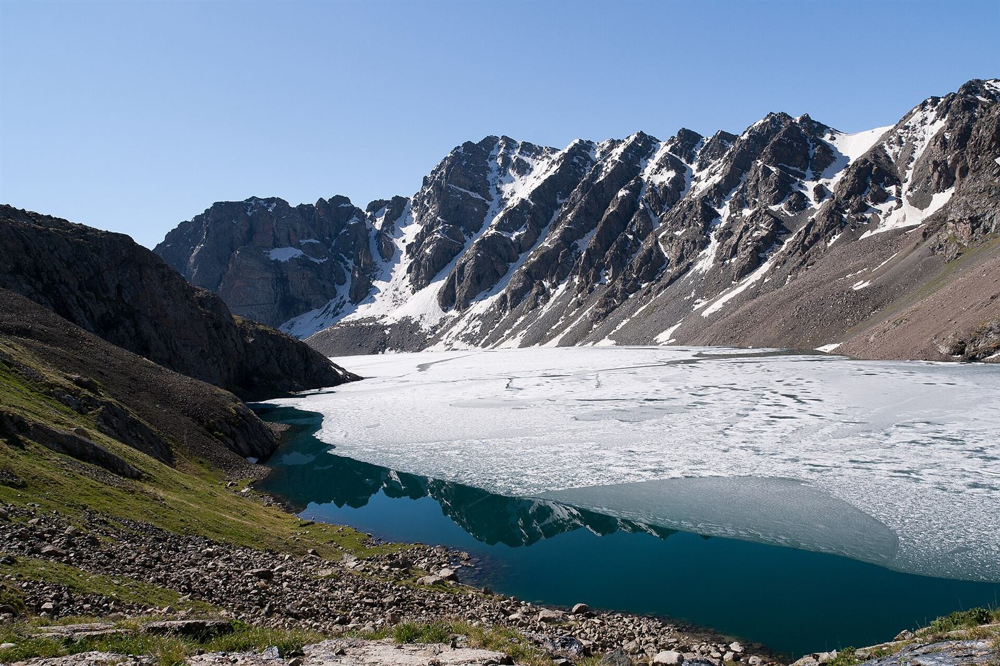
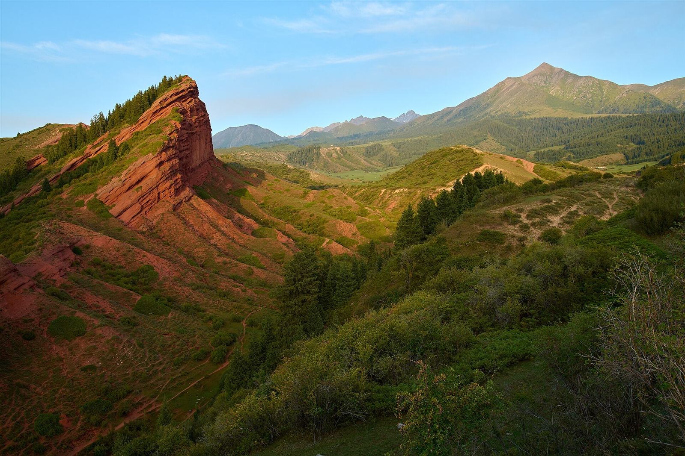
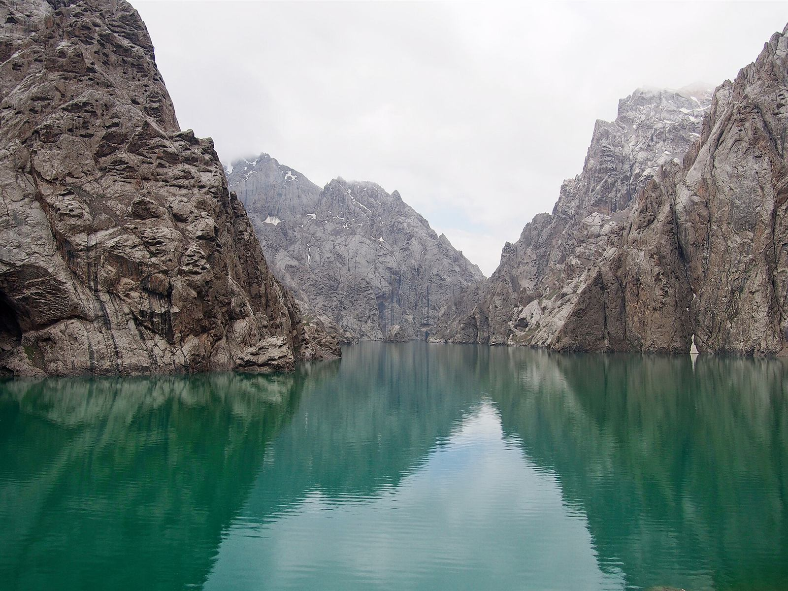
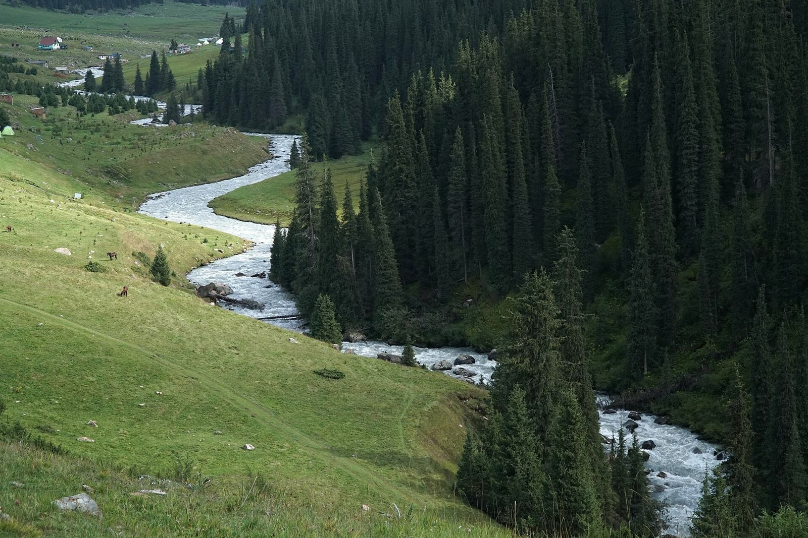
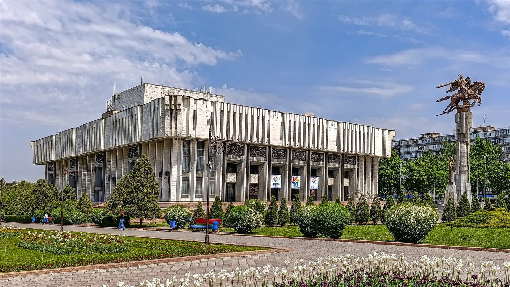

Discover the Land of Celestial Mountains
Turquoise alpine lakes, nomadic yurt camps, the Silk Road and the warm hospitality of the Kyrgyz people. Over 90% of Kyrgyzstan is covered by mountains, and they are waiting for you.
Places you can't miss
From the shores of Issyk-Kul to ancient Silk Road caravanserais, here are the highlights most visitors fall in love with.
 ↗
↗
Song-Kul Lake
A remote alpine lake at around 3,000 m surrounded by summer pastures. Stay in yurt camps run by herder families and go horse riding.

↗Issyk-Kul Lake

↗Ala-Kul Lake

↗Jeti-Oguz
 ↗
↗
Burana Tower

↗Kel-Suu Lake
 ↗
↗
Tash-Rabat

↗Altyn-Arashan


A young nation with an ancient soul
Kyrgyzstan has been independent only since 1991, but the Kyrgyz people were first mentioned in Chinese chronicles more than 2,000 years ago. Their epic of Manas, Silk Road cities and nomadic traditions still shape everyday life.
The Switzerland of Central Asia
Kyrgyzstan is one of the easiest and most rewarding countries to explore in the region.
Wild nature
Tian Shan and Pamir ranges, peaks above 7,000 m, glaciers, canyons and more than 2,000 lakes.
Nomadic culture
Stay in a yurt, try horse riding, watch eagle hunters and taste fresh kymyz (fermented mare's milk).
Silk Road history
Burana Tower, Tash-Rabat caravanserai and Osh's Sulaiman-Too, a UNESCO World Heritage Site.
Great value
Guesthouses, local food and transport are affordable, so your budget goes a long way here.


Live like a nomad for a few days
Community-based tourism lets you stay with local families, eat home-cooked food and support villages directly.
- Multi-day horse treks to Song-Kul or Ala-Kul
- Eagle hunting and kok-boru (horse game) demonstrations
- Felt-making workshops with local artisans
- Skiing at Karakol in winter
Ready for your adventure?
Tell us your dates and interests, and we'll help you build the perfect route.
Request a free itinerary